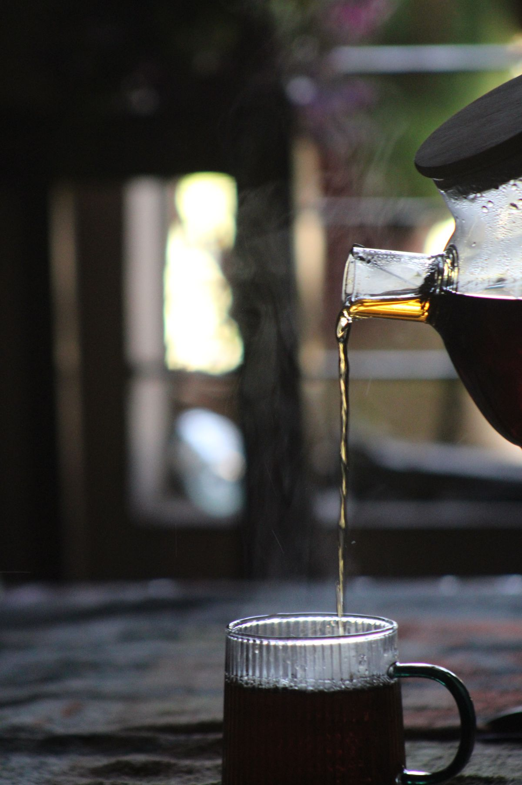
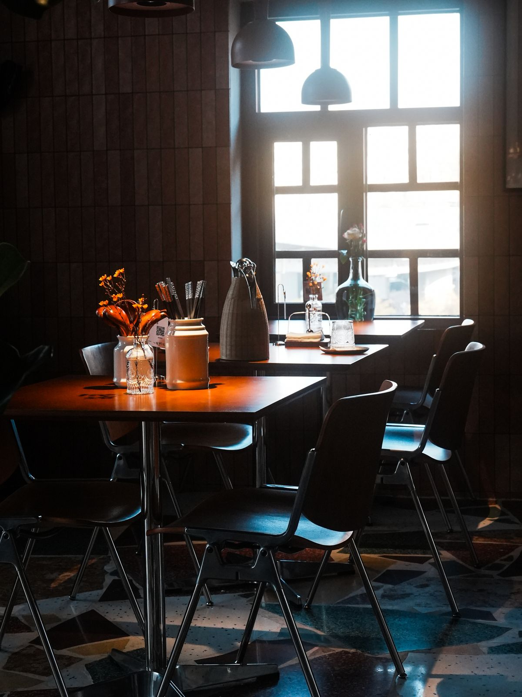
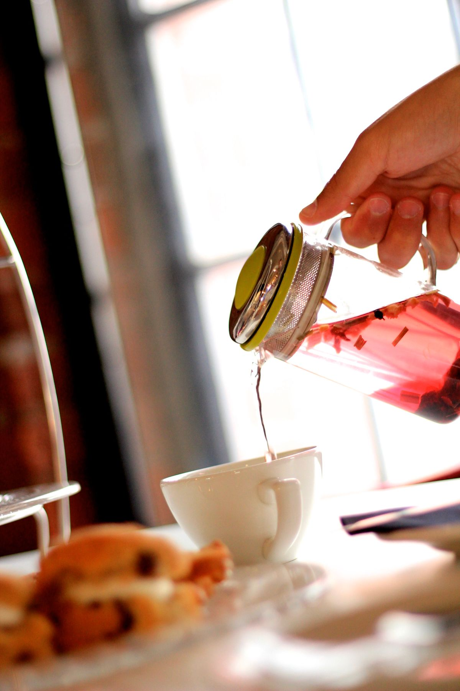
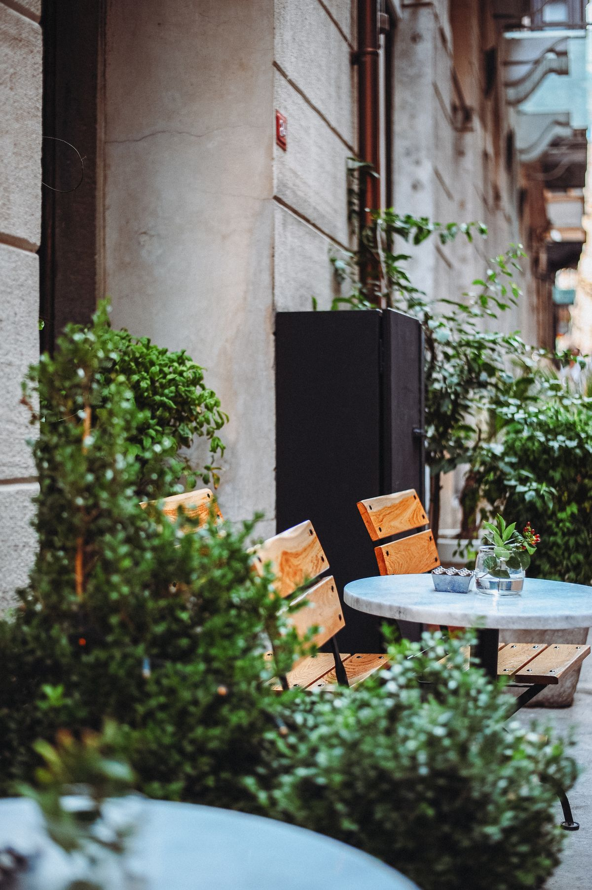
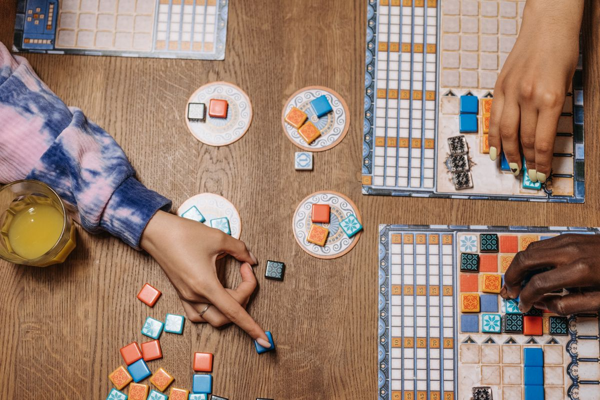
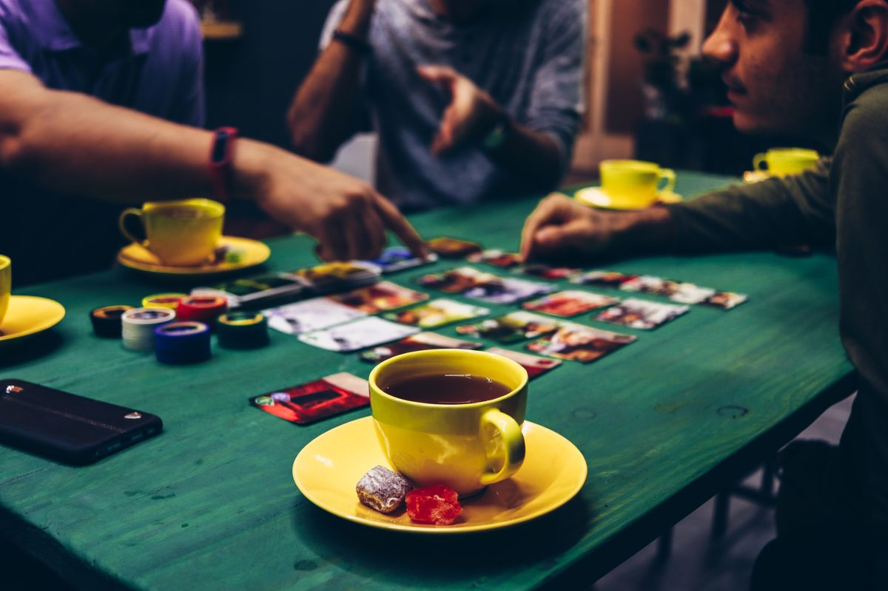
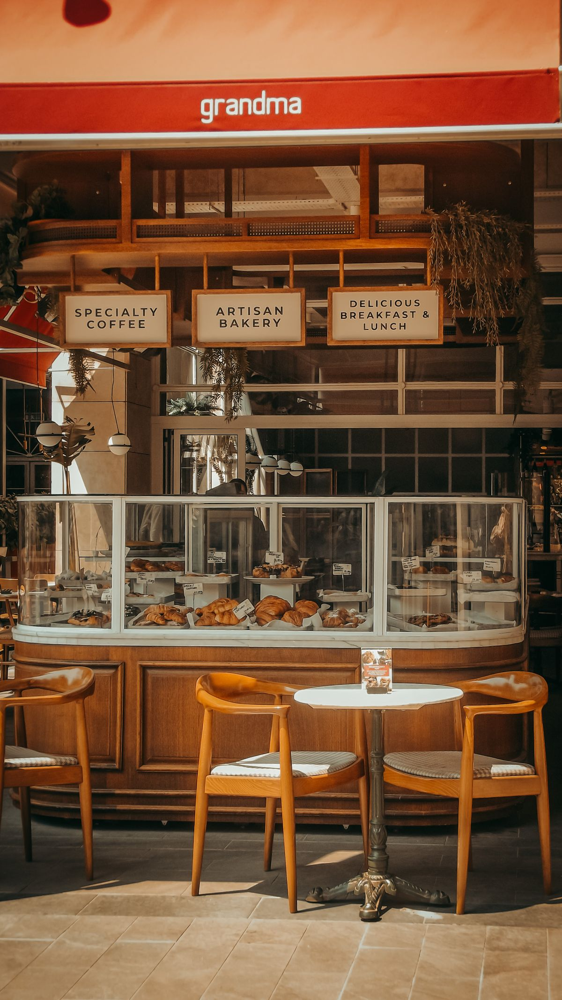

چای تخصصی
چایهای منتخب چای بار با دمآوری درست؛ همان چیزی که یک چایخانه واقعی را تعریف میکند.
چای بار در عمارت انجمن خوشنویسان اندرزگو نشسته است — چایخانهای با حیاطی سبز و تاریخی، چای و دمنوشهای تخصصی و فضایی که از شلوغی شهر جدایتان میکند. میزتان را همین حالا آنلاین رزرو کنید.

در چای بار، چای فقط یک نوشیدنی نیست؛ آیین اصلی کافه است — در کنار دمنوشها، کیکها و منوی سبک کافه رستوران.

چایهای منتخب چای بار با دمآوری درست؛ همان چیزی که یک چایخانه واقعی را تعریف میکند.

دمنوشهای گیاهی و ترکیبی؛ برای عصرهایی که به آرامش بیشتری نیاز دارید.

نشستن در حیاط عمارت انجمن خوشنویسان؛ تجربهای که در کمتر کافهای در تهران پیدا میشود.

کیک و شیرینی تازه در کنار چای؛ و منوی سبک کافه برای یک وعده کامل.

چای بار در سلیمی شمالی اندرزگو، در ساختمان انجمن خوشنویسان ایران قرار دارد؛ کافهای که مهمانانش برای خود فضا برمیگردند، نه فقط برای چای.
فضای کافه، یک عمارت قدیمی با حیاطی سبز است؛ معماری و آرامشی که در کافههای معمولی نیست.
چای و دمنوش، قلب منوی چای بار است؛ با انتخابهای متنوع برای هر ذائقه.
برای مطالعه، گفتوگوی آرام و فرار از شلوغی؛ چای بار پاتوق همین لحظههاست.
صفحه اینستاگرام ما @chaibartehran با بیش از ۹ هزار دنبالکننده، فضای کافه و برنامهها را بهروز منتشر میکند.
حیاط سبز، سایه درختان و فنجان چایی که عجلهای برای تمامشدنش نیست.






در فرم رزرو، روز و ساعت، تعداد نفرات و فضای موردنظرتان را مشخص کنید.
برای تأیید روز و ساعت رزرو، با شمارهای که ثبت کردهاید تماس میگیریم.
به انجمن خوشنویسان اندرزگو بیایید؛ میزتان آماده است.
تهران، خیابان اندرزگو، خیابان سلیمی شمالی، پلاک ۱۴۵، انجمن خوشنویسان ایران.
یک عمارت تاریخی با حیاطی سبز و آرام؛ فضای اصلی کافه، حیاط و ساختمان قدیمی انجمن خوشنویسان است.
چایهای تخصصی، دمنوشهای گیاهی، کیک و شیرینی و منوی سبک کافه رستوران.
بله؛ فضای آرام و دنج چای بار برای مطالعه و گفتوگوهای آرام شناخته شده است.
فرم رزرو همین صفحه را پر کنید یا با شماره ۰۲۱۲۲۲۱۰۳۱۱ تماس بگیرید.
فرم را پر کنید؛ برای تأیید روز و ساعت رزرو با شما تماس میگیریم. اگر ترجیح میدهید مستقیم صحبت کنیم، تماس بگیرید:
۰۲۱ - ۲۲۲۱۰۳۱۱ اینستاگرام: @chaibartehran